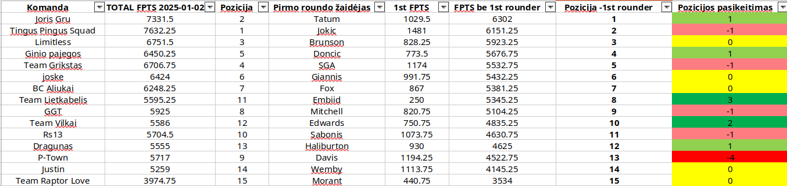

Kaip atrodytų mūsų komandos be pirmame rounde pašauktų žaidėjų?
2025-01-03 Rytis Astrauskas
Šia analize norėjau patikrinti kiek įtakos mūsų užimamai vietai turi pirmo roundo šaukimai ir
kaip atrodytų lentelė, jeigu jų neturėtume.
TOP 3, TOP 5 ir TOP 7 išlieka tos pačios komandos ir didžiausi pasikeitimai yra
tik per vieną poziciją, didesni pokyčiai pastebimi tik 8-15vt užimančiose
komandose.
Nors ir pokyčiai yra tik per vieną poziciją lentelės viršuje, tačiau man
(Tingus Pingus Squad) be Jokič nepavyktų išsaugoti pirmos vietos ir tektų ją
užleisti Joris Gru su Tatum priešakyje.
Limitless lieka 3 vietoje su Brunsonu, o Ginio pajegos pakiltų į 4 vietą,
kadangi šiuo metu traumuotas Dončič neturi tiek daug įtakos jo bendriems
fpts lyginant su Team Grikstas SGA renkamais fpts, kuris ir nukristų į 5 vietą.
Didžiausias pozicijų šuolis į viršų būtų Team Lietkabelis, kuris iš 11 vietos
pakiltų į 8 vietą, kadangi jo pirmojo roundo pasirinkimas buvo Embiid, kuris
didžiąją sezono dalį praleido dėl trauma ir surinko tik 250 fpts, t.y
mažiausiai iš visų pirmo roundo pasirinkimų.
Didžiausias nuosmukis būtų P-Town, kurio dabartinei 9 pozicijai daug įtakos
turi Davis stabilumas, be jo ši komanda nukristų iš 9 į 13 vietą, tai yra gan
logiška, kadangi šiuo metu pagal total fpts Anthony Davis nusileidžia tik
Nikola Jokič ir užima antra vietą.
Galima daryti išvadą, kad be pirmame rounde pašauktų žaidėjų stipriai
nepasikeistų mūsų užimamos vietos ir galutinę rikiuotę labiau lemia like
pasirinkimai bei laisvųjų agentų pasirinkimai.
